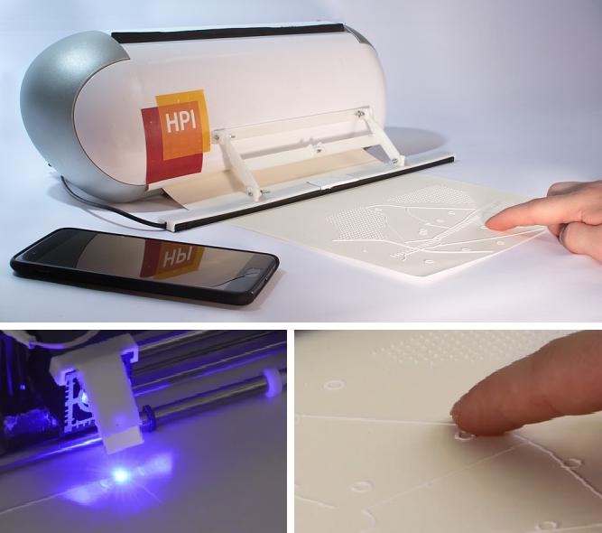

Kevin Reuss
Visiting student in the HCI Engineering Group at MIT CSAIL
Projects
Research

LinePod - A portable, interactive platform for the blind (9 months)
Together with 4 fellow students and under supervision of Prof. Dr. Patrick Baudisch and Dr. Oliver Schneider I build this platform as part of my bachelorproject. My task was to build the hardware. The system consists of a modified knife cutter, a fingertracking device called Airbar and a common Android smartphone. We replaced the knife in the knife cutter with a 2W laser for precisely heating up so called swell paper. This paper swells up in areas that gets heated up and thus can produce tactile lines, feelable for blind people. Because the paper is always in contact with the cutter, we can easily pull it in to extend the content. To allow interaction we use a Airbar device for touch input and the smartphones voice input and output for communication to the device. In addition we build a Framework to allow other developers to build apps for our platform and wrote a bunch of apps by ourself (f.e.: App for finding Apartments, Calendar)
Class

Real-Time Waking Life - Apply filter to environment using VR (6 months)
As part of the lecture Image processing algorithms I build a Android app that is capable of transforming 2D images in Real-Time so you can experience them with a VR device. I applied a cartoon-filter to the camera stream and used my app to prepare the filtered stream for the VR device. This allowed me a Real-Time experience of my environment but... everything looked like in a cartoon!!! (I also applied filters like invert and blur to the camera stream)

Interio - Interior Design for the blind (5 months)
Together with 3 fellow students I built Interio as part of the lecture Designing Interactive Systems. Interio allows blind people to mange the furniture in theire apartment to prevent furniture from beeing at inappropriated locations. It's possible to add, delete and arrange pieces of furniture in the selected groundplan. The system also offers the possibility to manage different versions and therefore allows to get better progress over time. We tested Interio with blind people and got great feedback! :)
The platform we build our system for is a research project you can check out here :
Linespace: a sense making platform for the blind
AcceptIt - Natural language userstories (5 months)
Within the lecture Software Technolgy I worked on a project called AcceptIt together with 4 fellow students. AcceptIt is a system that allows to specify userstories by using natural language. The system then checks if the userstories pass or fail, based on the codebase that belongs to the userstory and displays the results to the user. AcceptIt is written in Smalltalk for the environment Squeak.

MazeRunner - Single player game (5 months)
MazeRunner is a Single Player Game I developed together with 3 fellow students for the lecture Software Architecture. It's based on the Movie "Maze Runner" and the goal is to find a way out of the maze. To make the game more complicated a bunch of enemies try to catch you on your way out. But don't be scared, we provide you with some special capabilities like to freeze your enemies, jump over them and walls or teleport to a random position in the maze. To get these capabilites you need to collect the items in the maze, but you can only carry two items at once. MazeRunner is written in Smalltalk for the environment Squeak.

FPGA JumpnRun (2 weeks)
Together with my exercise partner for the lecture Digital Circuit Design using VHDL, I developed a Jump n Run Game for a FPGA. We used VHDL to build a VGA adapter to display the game on a monitor and a PS/2 adapter let the keyboard input control the game. For this we created control circuits for the game logic and implemented them using VHDL.
Personal
billy - My personal assistant
billy was my first contact with the field of AI. I started building him 2011 as a simple personal assistant to do things like saying "good morning" and "good evening" at a specific time or manage different timers. I communicated to billy via textinput and got speech output as a response. The system was written in Visual Basic. 4 years later I decided to do it in a more professional way and build a new version of billy in python. Now he is able to get my commands via speech input in 2 different languages (english, german) and has much more capabilities like managing my calendar, my music,... and is able to parse specific websites to extract information like weather forecasting. (in progress)

Drawable Marker - Bringing the power of markers to the paper
Together with a fellow student I thought about the power of markers and links. They allow to easily refer to sophisticated things (like a link to a website). The problem is : how can I use this power even if I prefer to organize my stuff on a sheet of paper? For this we created a solution called Drawable Marker. A link to f.e. a webpage gets assigned to a marker pattern. The user can draw the marker into his notes and if he reads the notes some time later he can use the app to take a photo of the marker to get directed to the link. (in progress)
translate - Talk to people speaking different languages
To solve the problem of communicating in different languages I wrote a python system that allows people to communicate, even if they speak two different languages and are at different places. Each of the users has its own system that records him and writes the text into a dropbox file. The system of the other users can read and translate that file. After that it uses voice output to read the translated text. This system works bidirectional to allow real communication.

MazeSearch - VR game
Infected from VR-fiever I decided to create my own VR Game. So I learned a lot about Unity 3D and C# and build a Game named MazeSearch. The player is in a dark maze and only has a light to see something. The goal is to find the man, hidden in the maze. To move, the player needs to hold his head in a specific angle range. If this happens the player moves in the direction he is looking to.

Simply - A simple interpreted programming language for everyday things
Simply is a programming language I developed to allow everybody creating solutions for everyday things. To do that I designed a basic syntax and built a Simply-Interpreter in C++. The first step is done, but I want to add more functionality. (in progress)